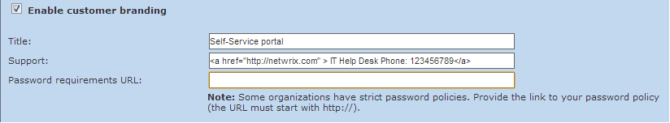
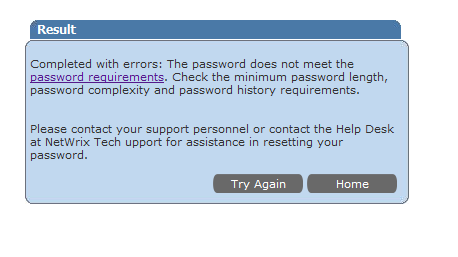

There is an option to specify Password requirements URL in the
Branding settings on the Administrative portal

When you specify a link in this field, it will not appear on the Self-Service portal itself.
The Password requirement URL is shown on an error screen that occurs if a specified password
does not meet the password policy.

Please
contact Netwrix support if you want to change this behavior.